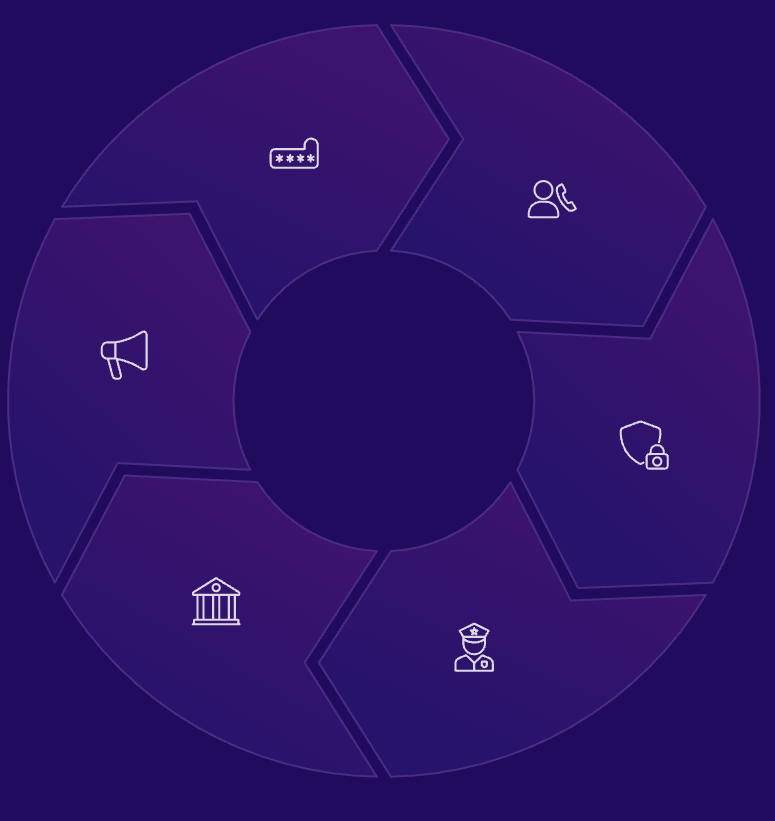

Protezione
Cosa fare dopo un furto di identità
Se, nonostante tutte le precauzioni, vi ritrovate vittime di un furto di identità digitale, è fondamentale agire con prontezza e metodo. Una risposta rapida può limitare significativamente i danni.
Cambiare tutte le password
La prima e più immediata azione è cambiare tutte le password, specialmente quelle degli account compromessi e di quelli correlati. Utilizzate password nuove, complesse e uniche.
Avvisare i Contatti
Se il vostro account di email o social media è stato compromesso, avvisate i vostri contatti che potrebbero ricevere messaggi fraudolenti a vostro nome.
Controllare i movimenti sospetti
Monitorate attentamente estratti conto bancari, carte di credito e profilo creditizio per identificare transazioni o richieste di credito sospette che potrebbero essere state effettuate a vostro nome.

Contattare i servizi coinvolti
Avvisate immediatamente le piattaforme o gli enti i cui servizi sono stati compromessi (provider di email, social media, banche, ecc.). Loro potranno bloccare l'accesso e guidarvi nei passi successivi.
Attivare Sistemi di Sicurezza Aggiuntivi
Se non lo avevate già fatto, abilitate l'autenticazione a due fattori (2FA) su tutti gli account. Considerate l'uso di un software antifrode o di monitoraggio dell'identità.
Segnalare alla Polizia Postale
Denunciate l'accaduto alla Polizia Postale o alle autorità competenti nel vostro paese.
Fornite tutti i dettagli e le prove disponibili.